조경기사 (2014-03-02 기출문제)
1과목: 조경사
1. 다음 중 경회루 지원에 관한 설명으로 틀린 것은?
- 정면 7칸, 측면 5칸의 팔작지붕
- 방지2방도
- 경회루 외부의 사각기둥 24개
- 경회루가 있는 섬에 들어가는 길은 3개의 아름다운 석교가 연결
(정답률: 81%)

2. 담양 소쇄원의 조영에 영향을 끼친 정원은?
- 원광한의 정원
- 만유당
- 어화원
- 평천산장
(정답률: 83%)
3. 이중환의'택리지'에 언급된 수구의 설명으로 옳은 것은?
- 역으로 흘러드는 물이 판국을 가로막으면 좋지못하다.
- 집터는 수구가 꼭 닫힌 듯하고 그 안이 펼쳐진 곳이좋다.
- 산중에서는 들판에 비해 수구가 닫힌 곳을 찾기 어렵다.
- 수구막이는 수구나 마을의 은폐를 위한 자연의 마을 숲이다.
(정답률: 72%)
4. 몬탈또(Montalto) 분수, 빛의 분수(Fountain ofLights), 거인의 분수, 돌고래 분수 등과 같은 정원 시설물을 만들어 놓은 이탈리아의 정원은?
- Villa d Esete(에스테장)
- Villa Lante(란테장)
- Villa Gamberaia(감베라이아장)
- Villa Aldobrandini(알도브란디니장)
(정답률: 84%)
5. 중국 왕희지의 난정고사에 연유해 조성된 조경 요소는?
- 곡수거
- 누정
- 별서정원
- 방지원도
(정답률: 82%)
6. 다음 중 미국의 토마스 제퍼슨이 설계한 정원은?
- 킹랜드
- 파트룬
- 몬티첼로
- 마운트버논
(정답률: 73%)
7. 다음 설명하는 용어는?
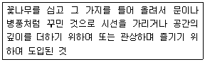
- 취병
- 화분
- 화오
- 화계
(정답률: 77%)
8. 이탈리아 르네상스식 빌라정원의 중정을 의미하며 야외공연장으로 이용되는 시설은?
- 닌페오(Ninfeo)
- 코르틸레(Cortile)
- 스칼리나타(Scalinata)
- 테라자(Terrazza)
(정답률: 55%)
9. 이슬람 정원의 특징이 아닌 것은?
- 주건물의 남향이나 서향에 위치
- 카나드(Canad)에 의해 물 공급
- 정원의 유형은 경사지 정원과 평지 정원으로 구분
- 경사지 정원에는 키오스크(Kiosk) 설치
(정답률: 65%)
10. 최초로 조경가(Landscape Architect)라는 공식 명칭을 사용하여 조경 전문직을 탄생하게 된 역사적 의의를 마련한 인물은?
- 보와 옴스테드(Vaux and Olmsted)
- 조셉 팩스턴(Joseph Paxton)
- 스타인과 라이트(Stein and Wright)
- 윌리엄 켄트(William Kent)
(정답률: 88%)
11. 중국 진나라 때 도연명의'안빈낙도'하는 생활 철학과 관련 있는 시문으로 나열된 것은?
- 귀거래사, 낙양가람기
- 귀원전거, 도화원기
- 오류선생전, 장한가
- 동파종화, 난정기
(정답률: 55%)
12. 다음 중 조선시대에 축조된 정원을 오래된 연대부터 옳게 나열한 것은?
- 양산보의 소쇄원 → 윤선도의 부용동 원림 → 다산초당원림 → 선교장 활래정 지원
- 윤선도의 부용동 원림 → 양산보의 소쇄원 → 선교장 활래정 지원 → 다산초당 원림
- 양산보의 소쇄원 → 다산초당 원림 → 윤선도의 부용동원림 → 선교장 활래정 지원
- 윤선도의 부용동 원림 → 양산보의 소쇄원 → 다산초당원림 → 선교장 활래정 지원
(정답률: 57%)
13. 이탈리아의 테라스식 조경이 특징적으로 발달하게 된 가장 결정적인 환경 요인은?
- 전망과 풍요한 자연
- 전망과 도시설계의 발달
- 지형과 기후
- 건축양식 발달과 지형
(정답률: 84%)
14. 창경궁 내 통명전 석란지 축조의 주된 사상적 배경이라 할 수 있는 것은?
- 음양오행사상
- 정토사상
- 자연숭배사상
- 유교사상
(정답률: 51%)
15. 중국 소주의 정원 중 화려한 정원 건축물이 많고 허와 실, 명암대비 등 변화있는 공간처리와 유기적 건축배치를 가진 것은?
- 졸정원
- 사자림
- 작원
- 유원
(정답률: 75%)
16. 다음 중 창덕궁 후원의 가장 깊은 곳인 옥류천 주위에 어정을 파고 소요정, 태극정, 청의정을 지은 왕은?
- 태종(1400~1418)
- 숙종(1659~1674)
- 인조(1623~1649)
- 광해군(1608~1623)
(정답률: 61%)
17. 일본을 대표하는 정원 중 하나인 용안사에 대한 설명 가운데 틀린 것은?
- 평정고산수 양식을 대표한다.
- 겸창(가마쿠라)시대 때 조성하였다.
- 일본의 바다를 표현했다는 학설도 있다.
- 크고 작은 15개의 정원석으로 만든 정원이다.
(정답률: 83%)
18. 페르시아 정원양식 중 이스파한(Isfahan)에 대한 설명으로 옳지 않은 것은?
- 16세기 압바스(Abbas : 1577~1628)왕이 왕궁을 옮겨 시가의 형태를 정비하였다.
- 체하르바(Tshehar Bagh)라고 불리는 7km 이상 넓게 뻗은 도로가 있다.
- 샬리마르 바(Shalimar Bagh)라고 하는 3개의 노단으로 나누어진 정원이 있다.
- 거리에는'마이단'이라고 부르는 380 × 140m나 되는 장방형의 공원광장이 있다.
(정답률: 77%)
19. 다음 중 조경과 관련된 옛 문헌과 저자의 연결이 틀린 것은?
- 임원십육지 - 서유구
- 고사신서 - 서명응
- 산림경제 - 강희안
- 순원화훼잡설 - 신경준
(정답률: 64%)
20. 광주 경렴정 별서정원과 관련 없는 것은?
- 뜰에는 채소원이 조성되어 있다.
- 조선시대 조성된 별서정원이다.
- 연못 안에 섬을 만들었다.
- 탁광무가 조성하였다.
(정답률: 70%)
2과목: 조경계획
21. 도시의 자연적 환경을 보전하거나 이를 개선하고 이미 자연이 훼손된 지역을 복원 개선함으로써 도시경관을 향상시키기 위하여 설치하는 녹지는? (단, 도시공원 및 녹지 등에 관한 법률을 적용한다.)
- 완충녹지
- 경관녹지
- 자연녹지
- 미관녹지
(정답률: 71%)
22. 다음 중 도면중첩법에 대한 설명으로 맞지 않은 것은?
- 트레싱지와 같은 투명한 종이에 식생, 토양 등 주제도를 작성하여 이들을 중첩시켜 토지적합성을 판단한다.
- 관련인자를 모두 고려하여 주변경관과 다른 특이성을 도출해 내는 방법이다.
- 컴퓨터를 사용하는 지리정보체계(GIS) 프로그램을 활용하여 주제도를 중첩시켜 토지적합성을 판단할 수 있다.
- 부지를 격자(grid)로 나누어 주제도를 작성하여 중첩 시키는 방법과 주제도를 점, 선, 면적으로 표현하여 중첩 시키는 방법이 있다.
(정답률: 72%)
23. 도입활동간 상관성 분석에 관한 설명 중 틀린 것은?
- 공간상 거리와 이동시간을 고려한다.
- 도입활동의 규모나 부지조건을 고려한다.
- 사람, 물건, 정보의 이동을 고려한다.
- 이상적인 기능적 상관관계를 고려한다.
(정답률: 37%)
24. 연간이용자수가 100000명인 관광지에서 최대일이용자수(A)와 최대시이용자수(B) 산정으로 올바른 것은? (단, 회전율 1/4, 최대일율 1/50로 한다.)
- A : 2000명, B : 500명
- A : 2000명, B : 600명
- A : 2500명, B : 500명
- A : 2500명, B : 600명
(정답률: 66%)
25. 다음 중 자연환경보전법에 의한 자연경관영향의 협의가 이루어지는 지역에 해당되지 않는 것은? (단, 해당하는 지역으로부터 대통령령이 정하는 거리 이내의 지역에서의 개발사업 등)
- 생태·경관보전지역
- 자연공원법의 규정에 의한 자연공원
- 습지보전법의 규정에 의하여 지정된 습지보호지역
- 문화재보호법상의 천연기념물보호지역
(정답률: 55%)
26. 다음 중 I . McHarg가 주로 사용해 정착된 적지 판정법은?
- DGN method
- motation method
- image map method
- overlay method
(정답률: 75%)
27. 대상지역의 생태계가 어느 정도의 훼손까지를 흡수하여 스스로 회복할 능력이 있는가를 판단하는 기준은?
- 물리적 수용능력
- 사회적 수용능력
- 생태적 수용능력
- 지역적 수용능력
(정답률: 76%)
28. 1,000m2의 슬로프 면적을 갖는 눈썰매장의 최대 부지면적은 얼마까지 할 수 있는가?
- 1,000m2
- 2,000m2
- 3,000m2
- 4,000m2
(정답률: 61%)
29. 주택법상'장기수선계획'의 설명 중 각 호의 조건에 해당되는 것은?
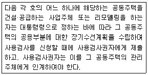
- 200세대 이상의 공동주택
- 200세대 이상의 지역난방식 난방방식의 공동주택
- 지역난방식 난방방식의 공동주택
- 승강기가 설치된 공동주택
(정답률: 51%)
30. Mitsch와 Gosselink(2000)가 제시한 습지생태계 복원을 위한 일반적인 원리로 가장 부적합한 것은?
- 습지 주변에 완충지대를 배치하라.
- 범람, 가뭄, 폭풍 등으로부터 피해를 받지 않도록 주변에 제방을 계획하라.
- 식물, 동물, 미생물, 토양물은 스스로 분포하고 유지될 수 있도록 계획하라.
- 적어도 하나의 주목표와 여러 개의 부수적 목표를 설정하라.
(정답률: 68%)
31. 다음 중 조경계획시 대안의 수립과정에 있어 가장 합리적인 방식은?
- 사소한 문제를 가지고 서로 상이한 안을 만들기보다는 보다 기본적인 측면에서 서로 상이한 안이 되게 작성한다.
- 계획의 흐름을 바꾸지 않는 범위 내에서 각 대안을 작성해야 한다.
- 대안의 작성은 기본구상 단계에서만 진행한다.
- 각개의 안이 완전히 상이하여 동일한 기본구상 아래 수립하면 평가 결정이 용이하다.
(정답률: 57%)
32. 기본계획은 프로젝트(project)에 관한 프로그램(혹은 기본전제)이 일단 정해진 후, 프로그램의 방향에 맞추어 물리, 생태적, 사회, 행태적, 시각, 미학적자료들의 분석, 종합 및 기본구상의 단계를 거쳐서 이루어진다. 프로그램 작성을 위해 필요한 사항이 아닌 것은?
- 프로젝트의 목적
- 시설물의 구체적 요건
- 이용객의 만족도
- 장래 성장 및 기능변화에 대한 유연성
(정답률: 57%)
33. 궁극적인 조경계획의 목표와 가장 거리가 먼 것은?
- 자연자원의 이해와 적절한 활용
- 토지의 생산력 증가
- 국토의 효율적 보전 및 이용
- 환경문제 전반에 걸친 문제의 해결
(정답률: 74%)
34. 다음 중 친환경 단지조성을 위해 도입하고 있는 지표나 제도가 아닌 것은?
- 생태면적률 도입
- 빗물침투시설 의무화
- 친환경 용적률 인센티브 제도
- 지하주차장 의무화
(정답률: 76%)
35. '주택건설기준 등에 관한 규정'에서는 공동주택 단지 조경시설에 대한 시설 기준을 제시하고 있다 본 규정에서 조경하고자 하는 부분의 지하에 주차장 등 지하구조물이 설치된 경우 최소 식재 토층을 조성하도록 규정하고 있는데, 이는 몇 미터(m)인가?
- 0.5m
- 0.7m
- 0.9m
- 1.2m
(정답률: 55%)
36. 다음 중 미기후(micro climate)에 영향을 가장 적게 끼치는 것은?
- 보차포장 재료
- 대상지 주변의 식재 현황
- 주변 건물의 배치
- 운행 중 차량 소음
(정답률: 74%)
37. 이용 후 평가(P.O.E)의 기본적 목표가 아닌 것은?
- 우수 작품 홍보
- 인간 행태 이해 증진
- 기존 환경개선을 위한 평가자료 제공
- 새로운 환경 창조를 위한 자료 제공
(정답률: 70%)
38. 다음 중 영역성에 대한 설명으로 옳지 않은 것은?
- 영역성은 사람뿐만 아니라, 일반 동물에서도 흔히 볼 수 있는 행태이다.
- 1차적 영역은 일상생활의 중심이 되는 반영구적으로 점유되는 공간이다.
- 2차적 영역은 사회적 특정그룹 소속원들이 점유한다.
- 공적 영역은 모든 사람들이 영구적이고 실제적으로 점유한다.
(정답률: 64%)
39. 자연환경보전법상의 자연유보지역의 설명 중 ( )안에 적합한 숫자는?
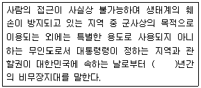
- 2
- 4
- 5
- 10
(정답률: 43%)
40. 유치거리와 규모 모두에 제한이 있는 도시공원으로 묶여진 것은?
- 소공원 - 어린이공원- 역사공원
- 소공원 - 도보권근린공원 - 수변공원
- 어린이공원 - 근린생활권근린공원 - 도보권근린공원
- 근린생활권근린공원 - 도보권근린공원 - 체육공원
(정답률: 67%)
3과목: 조경설계
41. 다음 중 공간색의 설명으로 가장 적합한 것은?
- 반사물체의 표면에 보이는 색
- 전구나 불꽃처럼 발광을 통해 보이는 색
- 유리나 물의 색 등 일정한 부피가 쌓였을 때 보이는 색
- 맑고 푸른 하늘과 같이 끝없이 들어갈 수 있게 보이는 색
(정답률: 62%)
42. 다음 중 도시공원에서'저류시설의 설치 및 관리기준'에 관한 설명으로 틀린 것은?
- 저류시설은 지표면 아래로 빗물이 침투될 경우 지반의 붕괴가 우려되거나 자연환경의 훼손이 심하게 예상되는 지역에서는 설치하여서는 아니 된다.
- 하나의 도시공원 안에 설치하는 저류시설부지의 면적비율은 해당 도시공원 전체면적의 50퍼센트 이하이어야 한다.
- 하나의 저류시설부지 안에 설치하여야 하는 녹지의 면적은 해당저류시설부지에 대하여 상시저류시설을 40퍼센트 이상, 일시저류시설은 20퍼센트 이상이 되어야 한다.
- 저류시설은 빗물을 일시적으로 모아 두었다가 바깥 수위가 낮아진 후에 방류하기 위하여 설치하는 유입시설, 저류지, 방류시설 등 일체의 시설을 말한다.
(정답률: 47%)
43. 다음 설명의 ( )안에 적합한 것은?
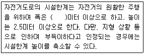
- 0.8
- 1.0
- 1.5
- 2.0
(정답률: 78%)
44. 고속도로 노선을 선정하고자 할 때 고려할 사항으로 가장 거리가 먼 것은?
- 되도록 직선이 노선
- 건조하기 쉽고 통풍이 잘되는 노선
- 곡선반경이 작은 노선
- 경관파괴가 최저로 발생되는 노선
(정답률: 63%)
45. 서로가 대조되는 양극단이 유사하거나 조화를 이루어 단계적 연속성을 나타내는 것은?
- 반복(repetition)
- 조화(harmony)
- 통일(unity)
- 점이(gradation)
(정답률: 55%)
46. 도시공원에 일반적인 수경요소(폭포, 분수 등)를 도입할 경우 공간 지각의 측면에서 볼 때 어느 요소로 보는 것이 가장 타당 하겠는가?
- 시각 및 청각적 요소
- 시각 및 촉각적 요소
- 청각 및 촉각적 요소
- 청각 및 후각적 요소
(정답률: 76%)
47. 먼셀의 색입체에 관한 설명으로 옳은 것은?
- 색입체에서의 명도는 위로 갈수록 높고 아래로 갈수록 낮다.
- 색의 4가지 속성을 3차원 공간에 계통적으로 배열한 것이다.
- 색의 3요소에서 색상은 방사선으로, 명도는 수직으로, 채도는 원으로 배열하는 것이다.
- 무채색 축을 중심으로 수직 절단하면, 좌우면에 유사색상을 가진 두 가지의 동일 색상면이 보인다.
(정답률: 64%)
48. 도로의 기능별 구분을 통한 설계속도에 관한 설명이다. 지방지역 구릉지 주간선도로(일반도로)의 설계속도(킬로미터/시간)은? (단, 도로의 구조･시설 기준에 관한 규칙을 적용한다.)
- 40
- 50
- 60
- 70
(정답률: 46%)
49. 조경도면의 치수 기입 방법에 관한 설명으로 옳은 것은?
- 치수는 특별히 명시하지 않는 한 마무리 치수로 표시한다.
- 치수 기입은 치수선 중앙 아랫부분에 기입하는 것이 원칙이다.
- 치수 기입은 치수선에 평행하게 도면의 오른쪽에서 왼쪽으로, 위로부터 아래로 읽을 수 있도록 기입한다.
- 치수선의 양끝은 화살 또는 점으로 혼용해서 사용할 수 있으며 같은 도면에서 치수선이 작은 것은 점으로 표시한다.
(정답률: 74%)
50. 다음 중 마커를 사용하여 프리핸드(freehand)에 의한 레터링(lettering)을 할 때 유의할 사항이 아닌 것은?
- 팔이나 몸을 회전시키지 않는다.
- 마커는 돌려서 사용하지 않는다.
- 종이에 마커의 전체 면이 닿지 않도록 주의한다.
- 수직선, 대각선, 곡선을 그을 때 마커의 면이 수직이 되도록 한다.
(정답률: 55%)
51. Kevin Lynch가 제시한 도시 이미지 형성에 기여하는 물리적 요소 개념에 속하지 않는 것은?
- 통로(paths)
- 모서리(edges)
- 연결(links)
- 결절점(node)
(정답률: 76%)
52. 삼각스케일에 표기되어 있는 축척이 아닌 것은?
- 1/100
- 1/300
- 1/600
- 1/800
(정답률: 79%)
53. 차폐(screen)와 은폐(camouflage)의 차이점 중 정확한 것은?
- 차폐는 시선을 가리는 것이고, 은폐는 대상물을 여과(filter)시켜 보이게 하는 것이다.
- 차폐는 시선을 가리는 것이고, 은폐는 대상물을 다른 물체로 위장시키는 것이다.
- 차폐는 시선을 여과시키는 것이고, 은폐는 대상물을 매몰하는 것이다.
- 차폐는 시선을 여과(filter)시키는 것이고, 은폐는 대상물을 다른 물체로 위장시키는 것이다.
(정답률: 69%)
54. 조경설계기준상의'생태못'설계와 관련된 설명으로 옳지 않은 것은?
- 일반적으로 종 다양성을 높이기 위해 관목숲, 다공질 공간 등 다른 소생물권과 연계되도록 한다.
- 야생동물 서식처 목적의 생태연못의 최소 폭은 5m이상 확보하고 주변식재를 위해 공간을 확보한다.
- 수질정화 목적의 못은 수질정화 시설의 유출부에 설치하여 2차 처리된 방류수(방류수 10ppm)를 수원으로 한다.
- 수질정화 목적의 못 안에 붕어 등의 물고기를 도입하고, 부레옥잠, 달개비, 미나리 등 수질정화 기능이 있는 식물을 배식한다.
(정답률: 73%)
55. 다음 [보기]의 시간경과와 거리지각의 관계 설명에 해당되는 것은?
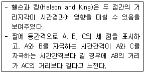
- 장의이론
- 카파효과
- 타우효과
- SBE기법
(정답률: 56%)
56. 색의 진출과 후퇴에 대한 설명 중 틀린 것은?
- 따뜻한 색은 진출색이 된다.
- 후퇴색은 팽창색이 된다.
- 명도가 높은 색은 진출색이 된다.
- 채도가 낮은 색은 후퇴색이 된다.
(정답률: 73%)
57. 다음의 건축선에 따른 건축제한과 관련된 기준 내용 중 ( )안에 알맞은 것은?
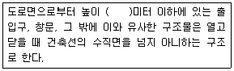
- 3.5
- 4.5
- 6
- 10
(정답률: 48%)
58. 다음 그림은 제3각법으로 제도한 것이다. 이 물체의 등각투상도로 알맞은 것은?
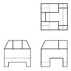
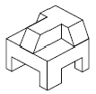
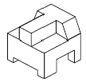
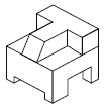
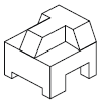
(정답률: 72%)
59. 자연을 과정으로서 이해할 수 있는 경관의 모습에 대한 설명이 옳지 않은 것은?
- 죽어서 썩어가는 나무
- 산에 피어 있는 꽃과 단풍
- 정원에 있는 아름다운 조형수
- 산불이 난 곳에 새롭게 자라난 유목
(정답률: 74%)
60. 조경설계기준의 계단돌 쌓기(자연석 층계) 설명으로 틀린 것은?
- 계단의 최고 기울기는 30~35°정도로 한다.
- 한 단의 높이는 15~18cm, 단의 폭은 25 ~ 30cm 정도로 한다.
- 계단의 폭은 1인용일 경우 90~110cm, 2인용인 경우에 130cm 정도로 한다.
- 돌계단 높이가 5m를 초과할 경우 너비 100cm 이상의 계단참을 설치한다.
(정답률: 55%)
4과목: 조경식재
61. 다음 중 참나무과가 아닌 것은?
- 가시나무
- 홍가시나무
- 밤나무
- 구실잣밤나무
(정답률: 55%)
62. 소나무 및 전나무 등에서 균사가 뿌리피층의 세포간극에 균사망을 형성하는 균근은?
- 의균근
- 외생균근
- 내생균근
- 내외생균근
(정답률: 58%)
63. r-선택과 k-선택에 따른 개체군의 생태학적 발달 유형을 바르게 설명한 것은?
- k-선택을 하는 개체군의 수명은 보통 1년 이상으로 길다.
- k-선택을 하는 개체군의 종내·종간 경쟁은 변하기 쉽고 느슨하다.
- r-선택을 하는 개체군의 사망은 좀 더 방향성이 있고 밀도 의존적이다.
- 기후가 변하기 쉽고 예견하기 어려우며 불확실할 때에 개체군은 k-선택을 한다.
(정답률: 45%)
64. Koelreuteria paniculata Laxmann에 대한 설명으로 틀린 것은?
- 잎은 호생이며, 기수1회 우상복엽
- 꽃은 6월경에 백색으로 개화
- 열매는 삭과로 검은색
- 낙엽활엽교목으로 수형은 원정형
(정답률: 40%)
65. 다음은 도로 중앙분리대에 식재할 수종이다 식재후의 생육 환경 병･충해 및 관리측면을 고려할 때 가장 부적합한 수종은?
- Euonymus japonica Thunb.
- Juniperus chinensis kaizuka
- Ligustrum japonicum Thunb.
- Pittosporum tobira Ait.
(정답률: 36%)
66. 야생 조류를 보호하기 위한 자연보호지구를 설정할때 고려할 사항이 아닌 것은?
- 자연보호구에 대한 목표 설정이 명확해야 한다.
- 생물자원에 대한 목록이 우선적으로 작성되어야 한다.
- 생태이동통로를 설정할 때 생태계 파괴의 주범인 역류의 원리가 발생하는 일은 절대 피해야 한다.
- 자연보호지구는 지속적으로 자연환경의 변화를 모니터링 할 수 있는 장소가 되어야 한다.
(정답률: 59%)
67. 종자 발아능력 검사방법 중 생리적인 면을 다룰 수 없는 것은?
- 발아시험
- X선사진법
- 배추출시험
- 테트리졸리움시험
(정답률: 60%)
68. 다음 중 식재공사를 위한 일반적인 이행요구 조건으로 가장 부적합한 것은?
- 식재공사에 앞서 토목공사가 선행되는 곳은 표토를 미리 채취해서 보관하여야 한다.
- 식재지 토양은 배수성과 통기성이 좋은 단립구조이어야 한다.
- 식물재료의 굴취에서부터 식재까지의 기간은 수목생리상 지장이 없는 범위 내에 실시한다.
- 공사 착수전에 설계도서에 따라 정확한 식재위치를 감독자 입회하에 결정한다.
(정답률: 62%)
69. 다음 조경 수목 중 개화시기가 가장 늦은 수종은?
- Camellia japonica L.
- Chaenomeles speciosa (Sweet) Nakai
- Fatsia japonica (Thunb.) Decne. & Planch.
- Albizia julibrissin Durazz.
(정답률: 43%)
70. Prunus padus L에 대한 설명으로 틀린 것은?
- 수피는 흑갈색이다.
- 생육속도가 매우 느리다.
- 5월에 백색의 꽃이 핀다.
- 원산지는 한국으로 내공해성이 강하다.
(정답률: 46%)
71. 다음 중 심근성 수종으로만 짝지어진 것은?
- 서양측백, 보리수나무, 미루나무
- 둥근향나무, 수양버들, 쪽동백
- 주목, 느티나무, 굴거리나무
- 편백, 칠엽수, 마가목
(정답률: 62%)
72. 다음 중 옥상정원 식재(root planting)시 가장 우선적으로 고려해야 할 것은?
- 식재간격
- 식재형태
- 토양산도
- 뿌리의 특징
(정답률: 67%)
73. 다음 중 암수한그루로 나열된 것으로 옳은 것은?
- 왕버들, 소철
- 자작나무, 오리나무
- 은행나무, 버드나무
- 물푸레나무, 단풍나무
(정답률: 40%)
74. 수림의 경우, 방풍효과를 높일 수 있는 가장 적절한 밀폐도는?
- 15~30%
- 35~50%
- 50~70%
- 80~100%
(정답률: 66%)
75. 다음 중 덩굴성 식물로만 짝지어진 것은?
- Celastrus orbiculatus - Actinidia arguta
- Campsis grandiflora - Aesculus turbinata
- Parthenocissus tricuspidata - Callicarpadichotoma
- Lonicera japonica - Hydrangea macrophylla
(정답률: 39%)
76. 불두화, 박태기 나무, 병꽃나무 등 대관목의 생육에 필요한 최소토심(cm, 토양등급 중급 이상)은 얼마인가?(단, 조경설계기준을 따른다.)
- 60
- 90
- 120
- 150
(정답률: 52%)
77. 수목의 지상부 중량을 계산하는 식과 관련한 설명중 틀린 것은?
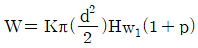
- K : 수간 형상지수
- d : 근원직경(m)
- w1 : 수간의 단위체적당 중량
- p : 지엽의 다소에 의한 할증률
(정답률: 50%)
78. 완도 내 해발 100m 이하인 지역에 생태공원을 조성 하고자 한다. 다음 중 식재하기에 가장 부적합한 수종은?
- 모람
- 쪽제비싸리
- 종가시나무
- 갈참나무
(정답률: 39%)
79. 정형식 식재방법에 대한 설명으로 옳지 않은 것은?
- 잔디밭 중앙에 한 그루 식재
- 테라스 좌우에 같은 모양의 두 그루 식재
- 미관상 좋지 못한 건물을 가리기 위해 일정하게 좁은 간격으로 식재
- 하나의 패턴을 이루도록 한 그루씩 드물게 식재
(정답률: 51%)
80. 다음 중 조경수의 특성으로 틀리 것은?
- Pinus thunbergii Parl : 잎이 2개씩 속생하며 수피는 흑갈색이다.
- Sciadopitys verticillata Siebold & Zucc : 3개씩 속생하는 잎이 단지 위에 붙어 윤생하는 것처럼 보인다.
- Pinus koraiensis Siebold & Zucc : 잎이 5개씩 속생, 수피는 흑갈색이다.
- Pinus rigida Mill : 잎이 3개씩 속생, 수피에 맹아가 발달한다
(정답률: 50%)
5과목: 조경시공구조학
81. 팽창균열이 없고 화학저항성이 높아 해수･공장폐수･하수 등에 접하는 콘크리트에 적합하고, 수화열이 적어 매스콘크리트에 적합한 시멘트는?
- 고로시멘트
- 폴리머시멘트
- 알루미나시멘트
- 조강포틀랜드시멘트
(정답률: 56%)
82. 정사각형 도형의 단면계수가 36cm3일 때 한변의 길이는 몇 cm인가?
- 4
- 6
- 8
- 10
(정답률: 71%)
83. 공정표 작성 시 네트워크(Net work)수법의 장점에 해당되는 것은?
- 작성 및 검사에 특별한 기능이 요구되지 않는다.
- 다른 공정표에 비하여 익힐 때까지 작성 습득 시간이 짧다.
- 실제의 공사가 구분되어 이행되지 않으므로 진척 사항에 대한 특별한 연구가 필요하다.
- 개개의 작업관련이 도시되어 있어 내용이 알기 쉽다.
(정답률: 56%)
84. 목재에 관한 설명 중 옳지 않은 것은?
- 기건상태에서 목재의 함수율은 15%정도이다.
- 열전도도가 낮아 여러 가지 보온 재료로 사용된다.
- 섬유포화점 이하에서는 함수율이 감소할수록 강도는 증대하며 인성은 감소한다.
- 섬유포화점 이상의 함수상태에서는 함수율의 증감에 비례하여 신축을 일으킨다.
(정답률: 35%)
85. 콘크리트의 수밀성을 확보하기 위한 시공방안으로 적당하지 않은 것은?
- 연직 시공이음에는 지수판의 사용을 원칙으로 한다.
- 혼화재료로서 팽창재는 콘크리트의 누수 원인이 되어 수밀성을 저해한다.
- 소요의 품질을 갖는 수밀 콘크리트를 얻을 수 있도록 적당한 간격으로 시공이음을 두어야 한다.
- 수밀 콘크리트는 양질의 AE제와 고성능 감수제 또는 포졸란 등을 사용하는 것을 원칙으로 한다.
(정답률: 50%)
86. 사면의 종류별 특성에 대한 설명이 틀린 것은?
- 사면은 단면형태에 따라 직립사면, 반무한사면, 단순사면으로 구분할 수 있다.
- 단순사면은 일정한 경사를 가진 사면이 계속되어 펼쳐진 것이다.
- 직립사면은 연직으로 절취된 사면으로, 암반으로 볼 수 있다.
- 단순사면의 붕괴는 저부파괴, 사면선단파괴, 사면내파괴로 구분된다.
(정답률: 45%)
87. 흙의 투수계수에 관한 설명으로 틀린 것은?
- 흙의 투수계수는 형상계수에 따라 변화한다.
- 흙의 투수계수는 물의 단위중량에 비례한다.
- 흙의 투수계수는 물의 점성계수에 비례한다.
- 흙의 투수계수는 흙 유효입경의 제곱에 비례한다.
(정답률: 50%)
88. 지상 1km2의 면적을 지도상에서 4cm2로 표기하기 위해서는 다음 중 어느 축척으로 하여야 하는가?
- 1/500
- 1/5,000
- 1/50,000
- 1/500,000
(정답률: 48%)
89. “다져진 상태의 토량 ÷ 흐트러진 상태의 토량”을 표기한 체적환산계수(f)는?
- C
- L
- 1/L
- C/L
(정답률: 62%)
90. 5000m3를 성토하여 주차장을 조성하고자 한다 토취장의 토질이 사질토일 때 자연상태의 토량은 어느 정도 굴착해야 하는가? (단, L=1.20, C=0.95이다.)
- 4,167m3
- 4,750m3
- 5,263m3
- 6,000m3
(정답률: 37%)
91. 표면마무리에 대한 설명으로 옳은 것은?
- 표면마무리는 내구성, 수밀성에 영향을 주지 않는다.
- 마모를 받는 면의 경우에 물-결합재비를 크게 한다.
- 거푸집을 제거 후 발생한 콘크리트 표면의 균열은 방치해도 좋다.
- 표면마무리는 콘크리트 윗면으로 스며 올라온 물을 처리한 후에 한다
(정답률: 59%)
92. 다음 각각의 입찰방법에 대한 설명으로 틀린 것은?
- 일반경쟁입찰은 저렴한 공사비와 공사수주희망자에게 기회를 균등하게 줄 수 있으며 신용, 기술, 경험, 능력을 신뢰할 수 있어 우수한 입찰방법이다.
- 제한경쟁입찰은 계약의 목적, 성질에 따라 입찰참가자의 자격을 제한할 수 있다.
- 지명경쟁입찰은 자금력과 신용 등에서 적합하다고 인정되는 특정 다수의 경쟁 참가자를 지명하여 입찰에 참여 하도록 한다.
- 수의계약은 소규모 공사, 특허공법에 의한 공사, 신기술에 의한 공사인 경우 체결할 수 있다.
(정답률: 61%)
93. 각종 금속에 대한 설명 중 옳지 않은 것은?
- 납은 비중이 비교적 작고 융점이 높아 가공이 어렵다.
- 알루미늄은 비중이 철의 ⅓정도로 경량이며 열･전기 전도성이 크다.
- 청동은 구리와 주석을 주체로 한 합금으로 건축장식부품 또는 미술공예 재료로 사용된다.
- 동은 건조한 공기 중에서는 산화하지 않으나, 습기가 있거나 탄산가스가 있으면 녹이 발생한다.
(정답률: 59%)
94. 다음 식재품 중 건설공사시 표준품셈에 수록되어 있지 않은 것은?
- 뿌리분의 크기에 의한 식재
- 나무높이(수고)에 의한 식재
- 초류종자 살포(기계살포)
- 유지관리를 위한 가로수 전정
(정답률: 33%)
95. 정지계획을 위한 등고선 조작방법 중에서 절토에 의한 방법의 장점으로 가장 적합한 설명은?
- 지반을 비교적 안정하게 할 수 있다.
- 대규모 대지에서 가장 유리하다.
- 여러 지역에서 일정한 경사를 유지할 수있다.
- 절토와 성토의 균형을 이루어 공사비를 절감할 수 있다.
(정답률: 43%)
96. 발포제로서 보드상으로 성형하여 단열재로 널리 사용되며 건축벽 타일, 천장재, 전기용품 등에 쓰이는 열가소성 수지는?
- 실리콘수지
- 아크릴 수지
- 폴리에스테르 수지
- 폴리스티렌수지
(정답률: 40%)
97. 조경석 쌓기 시공상 유의해야 할 사항 중 옳지 않은 것은?
- 전체적으로 하부의 돌을 상부의 돌보다 큰 것을 사용한다.
- 가로쌓기는 설계도면 및 공사시방서에 명시가 없는 경우 높이가 1.5m 이하일 때에는 메쌓기를 한다.
- 세워쌓기의 경우 좌우 돌의 겹치기, 띄기 등은 설계도면에 따라 전체가 조화되게 배열한 다음 흙을 필요한 높이까지 채워 다진다.
- 돌쌓기는 오르기, 맞대기, 한줄이음(막힌줄눈)등의 시공으로 안전도를 높여야 한다.
(정답률: 25%)
98. 수준측량에서 우연오차로 판단되는 것은?
- 빛의 굴절에 의한 오차
- 지구 곡률에 의한 오차
- 십자선의 굵기로 인해 발생하는 읽음 오차
- 표척의 눈금이 표준척에 비해 약간 크게 표시되어 발생하는 오차
(정답률: 40%)
99. 광파거리측정기(Light Wave EDM)의 특징 설명으로 틀린 것은?
- 종국과 주국으로 구성되어 있다.
- 경량이며, 작업이 신속하다.
- 움직이는 장애물의 간섭을 받지 않는다.
- 관측범위는 단거리용 5km 이내, 중거리용 60km 이내이다.
(정답률: 35%)
100. 그림과 같은 보에서 최대 굽힘 모멘트의 크기는 몇 kNm인가?
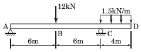
- 12
- 30
- 72
- 156
(정답률: 31%)
6과목: 조경관리론
101. 어떤 시설물에 3년마다 600만원이 소요되는 작업을 3년에 1회씩 도장공사를 실시하면, 단위년도의 예산은 얼마인가?
- 100만원
- 200만원
- 300만원
- 600만원
(정답률: 60%)
102. 수목에 나타나는 미량요소 결핍과 관련한 설명 중 옳지 않은 것은?
- B 결핍은 황 결핍과 동반하여 나타나는 특징이 있다.
- Zn이 결핍되면 잎이 작아지고 괴사반점으로 얼룩진다.
- Mn의 결핍은 잎을 누렇게 변색시키며 새순의 왜성화를 일으킨다.
- Fe결핍은 산성토양보다 알칼리토양에서 더 쉽게 일어난다.
(정답률: 31%)
103. 다음 중 병원체가 토양 내에서 월동하는 것은?
- 소나무 혹병
- 밤나무 잉크병
- 낙엽송 끝마름병
- 오동나무 부란병
(정답률: 35%)
104. 식물 잎의 기공을 통하여 흡수되는 대기오염 가스로 인해 식물에 나타나는 증상이 아닌 것은?
- 효소작용의 교란
- 각종 대사작용의 저해
- 체내 성분의 분해·결합
- 양·수분의 급격한 배출
(정답률: 47%)
1⑤. 다음 중 다주기성 병에 대한 설명으로 옳은 것은?
- 활엽수에 주로 나타난다.
- 곰팡이에 의한 병은 모두 다주기성이다.
- 2차전염원을 만들어 여러 번 반복 감염을 시킨다.
- 여러 생육기에 걸쳐 병원균의 한 세대가 완성된다.
(정답률: 54%)
106. 다음 목재로 된 벤치에 대한 단점으로 가장 거리가면 것은?
- 병해충의 피해를 받기 쉽다.
- 습기에 약하며 썩기 쉽다.
- 내화력이 작다.
- 파손되면 보수가 곤란하다.
(정답률: 62%)
107. 조경수목에 살포한 농약이 시간의 경과에 따라 물리, 화학적으로 변화되는 주성분 또는 물리성을 확인하는 시험방법은?
- 경시변화시험
- 내열내한성시험
- 저장 안정성시험
- 저온 안전성시험
(정답률: 60%)
108. 다음 ＜보기＞에 대한 설명은 조경관리의 종류 중 어느 것 인가?
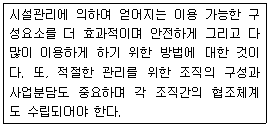
- 사전관리
- 운영관리
- 유지관리
- 이용관리
(정답률: 55%)
109. 양이온 치환용량(CEC)에 대한 설명 중 옳지 않은 것은?
- CEC가 크면 대체로 토양의 비옥도가 높다.
- 유기물이 많은 토양은 대체로 CEC가 크다.
- 토양의 ph가 낮아질수록 CEC는 크다.
- 토양이 미세할수록 CEC는 크다.
(정답률: 51%)
110. 옥외 조명등의 관리상 열효율이 높고, 투시성이 뛰어나며, 설치비는 비싸지만 유지관리비가 저렴한 것은?
- 금속 할로겐등
- 나트륨등
- 수은등
- 형광등
(정답률: 47%)
111. 정원수 전정에 있어서 그 제거 대상으로 적당하지 않는 것은?
- 병균이 붙어 있는 가지
- 도장지
- 근생아
- 화지
(정답률: 51%)
112. 다음 중 표징이라 볼 수 없는 것은?
- 포자
- 자실체
- 궤양
- 균사조직
(정답률: 38%)
113. 농약의 분자구조 중 요소(H2N-CO-NH2)골격을 가진 화합물로 구성된 형태는?
- 우레아(Urea)계
- 아마이드(Amide)계
- 다이아진(Diazine)계
- 트리아진(Triazine)계
(정답률: 35%)
114. 다음 중 물리적 잡초방제법이 아닌 것은?
- 소각(flaming)
- 피복(covering)
- 윤작(crop rotation)
- 솔라리제이션(solarization)
(정답률: 45%)
115. 다음 중 한국 잔디의 설명으로 옳지 않은 것은?
- 생육적온은 10~20℃ 정도이다.
- 한국 원산의 숙근초로서 보통 들잔디라고 부른다.
- 완전포복경으로 지하경이 왕성하게 뻗어 옆으로 기는 성질이 강하다.
- 5~6월에 개화하며, 6~7월에 결실하고, 지상부는 늦가을에 생육이 정지되면서 고사한다.
(정답률: 49%)
116. 칠레초석에 과인산석회를 배합하면 화학적으로 어떤 불리한 영향을 초래하는가?
- 양분의 불용해화
- 암모늄태 질소의 휘발
- 질산태질소의 환원에 의한 손실
- 질산태질소의 무수질산으로의 휘발
(정답률: 35%)
117. 다음 시설물 중 부식이 가장 빠르게 나타날 수 있는 조건은?
- 그늘에 설치된 프라스틱 제품
- 콘크리트에 묻힌 철제 지주
- 고온지대에 설치된 철 제품
- 물 표면에 접한 목재부분
(정답률: 57%)
118. 국립공원을 포함한 자연공원에서는 휴식년제를 실시하고 있는데 조경관리의 기본 전략 중 어디에 속하는 내용인가?
- 완전방임형 관리 방법
- 폐쇄 후 육성 관리
- 폐쇄 후 자연회복형
- 순환식 개방에 의한 휴식시간 확보
(정답률: 46%)
119. 토양중의 일부 미생물은 공기 중의 질소를 고정시키는 기능을 갖고 있다 다음 중 공기 중 질소를 고정시키는 미생물이 아닌 것은?
- Azotobacter
- Nitrobacter
- Rhizobium
- Clostridium
(정답률: 41%)
120. 해충의 살충제에 대한 저항성 발현정도에 대한 설명으로 틀린 것은?
- 해충 밀도가 높을수록 크다.
- 해충세대 간이 짧을수록 크다.
- 농약의 잔효성이 길수록 크다.
- 살포 농약의 횟수가 많거나 농도가 높을수록 크다.
(정답률: 41%)